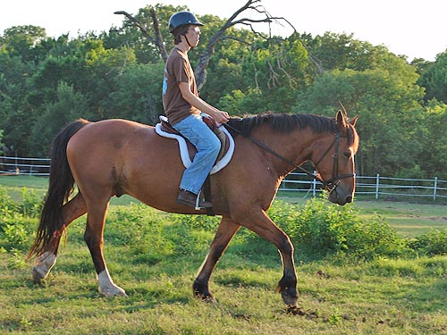
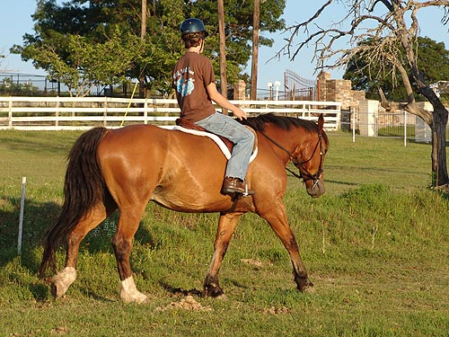
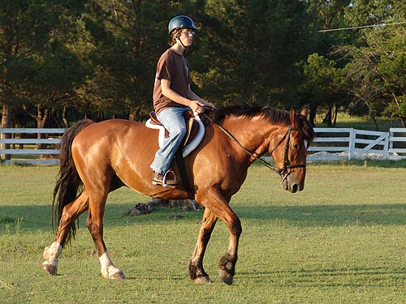
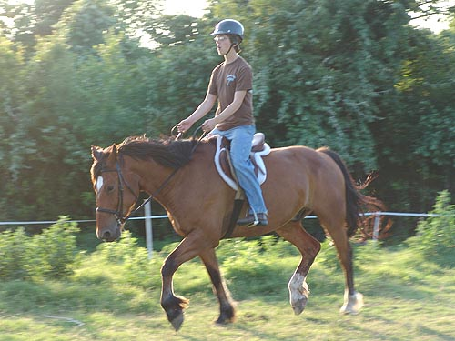
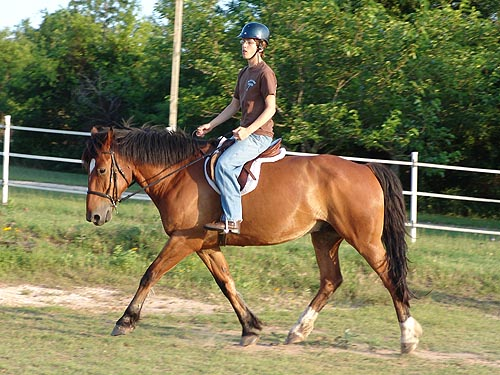
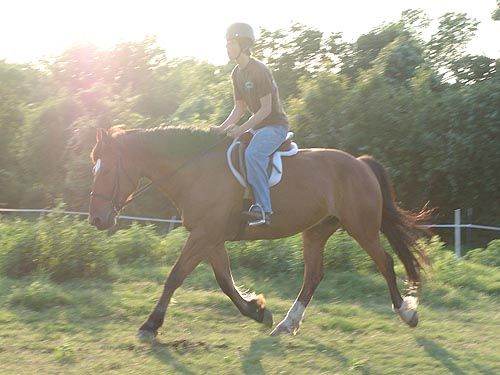
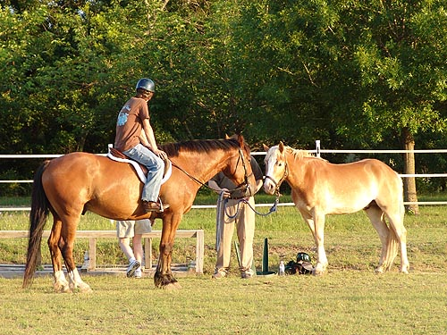

Steven riding Bob With the young horses, I'm not getting
much time on Bob.
So, while it's been a week or two since
he's been ridden,
Steven said he's the same exact horse
every time he gets up.
The don't do a lot of work, but Steven
can take him over the ground
poles and sometimes little jumps. Usually
they just walk or trot around
the arena and practice things like picking
up a trot in a certain place and then
walking or halting in a certain place.
Click
here to see Amy on Wiley

Steven's got good posture on the horse,
but we're always discussing his heels.

I think Bob likes it when Steven rides,
because he leaves him alone except for speed and direction.

Bob tends to go in a Training Level
frame if he's left alone.

Steven's heels are better when they're
trotting.

Bob doesn't need any encouragement
to be forward in his trot.

Here he's doing his driving horse
trot. Really covering ground.

Bob talking to Adiron and Steven talking
to Julie. Even at 7 at night it's pretty hot. The kids haven't been out
for the past month with the end of school, so Steven and Amy got tired
before the horses did.